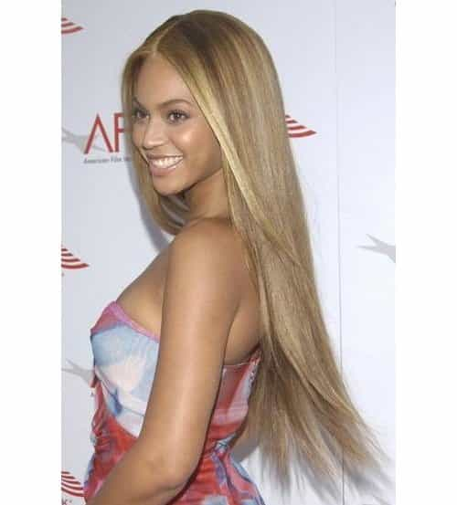

< < < Back
10 Tragic Examples Of Pretty Girls Ruining Themselves With Bad Hair – Return Of Kings
Ah Tuthmosis, how you love to enrage the internet. As an aside to the fundamental principles of Tuth’s article, here are some girls who went from riches to rags.
10. Buzz The Brunette
An instructional video on how to make a somewhat decent girl undoubtedly ugly in just over a minute. Notice the one giving the cut suffers from the same syndrome.
9. Beyonce

She really followed through with all her independent woman and single lady talk. Rumor has it she realized her mistake and within days “corrected” it.
8. Young Brainwashee
The feminism influence gets them young. Poor girl, she will suffer months of teasing during recess as a result of her Lifetime channel watching perceived independent woman of a purported mother.
7. Ginnifer Goodwin


I really don’t need to say anything on this one.
6. Random Brunette Victim
Not sure if the dude in the video is a super white knight or a catty gay dude, but either way he feeding bullshit to this poor girl who’s about to change her life for the worse. She goes from “would bang” to “would not bang” in 6:37.
5. Polish Extensions

For the halfway point, I thought I’d switch it up and go in reverse. See what extensions can do? Arguably this blonde goes a full point higher with six inches of added length.
4. Laura Cat Girl
Another reverse… haha just kidding. Hair long, short or even made of gold, we’re not banging her. Note the animal on the sweater.
3. Keira Knightley

This just proves that even a beautiful face can’t save the catastrophic effect those scissors had on her aesthetics. Shame, she was a lovely girl.
2. Sarinja
This one broke my heart. Look at this cute girl with her long hair. A girl you would consider introducing to your friends with her sweet innocence and delightful head of hair. No longer after she mutilated her head. See the first few comments for extra hamsterism.
1. Miley Cyrus

She is a complete mess, which only serves to substantiate my fellow writer Tuthmosis’ theory. This hilarious comparison only speaks the truth. Simple Jack is a parody of a film within a film where Ben Stiller’s character is admonished for acting as a mental handicapped person with no redeeming qualities. We are cautioned to “never go full retard.” Well, Miley didn’t listen…she went full retard.
Read Next: The Perfect Woman: Hair